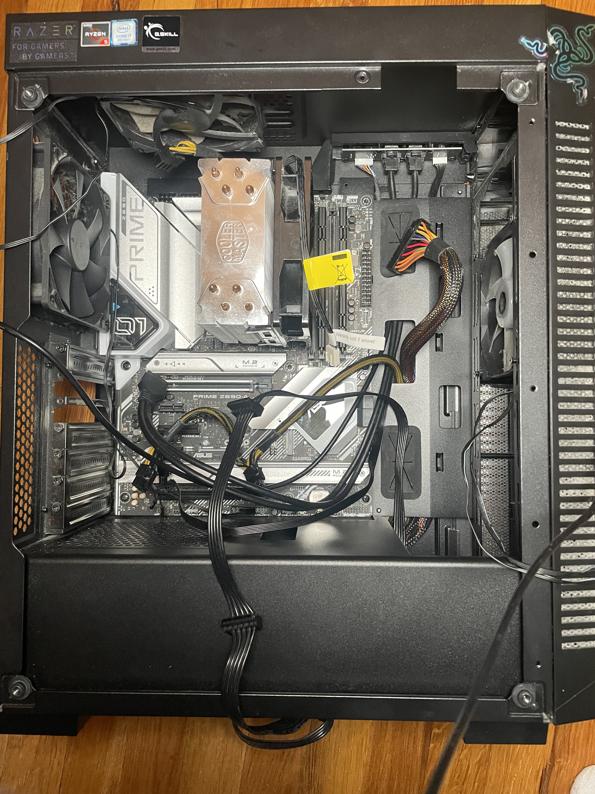
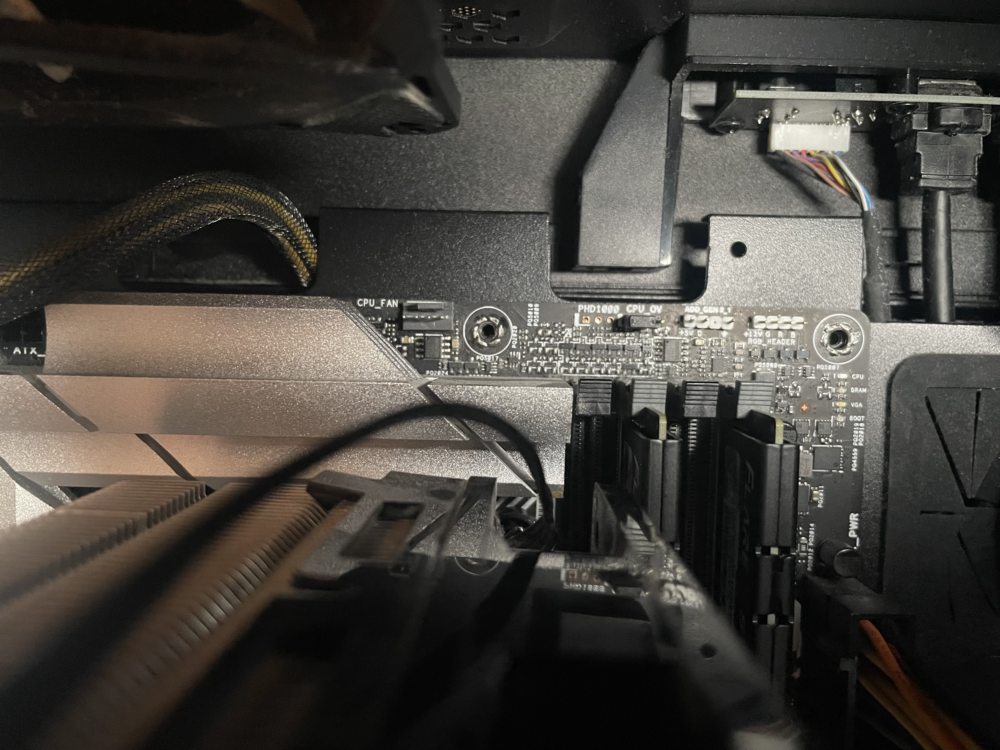
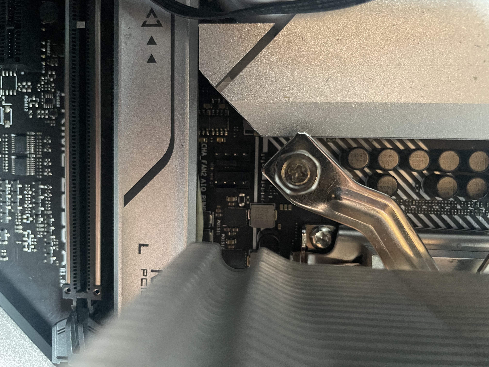
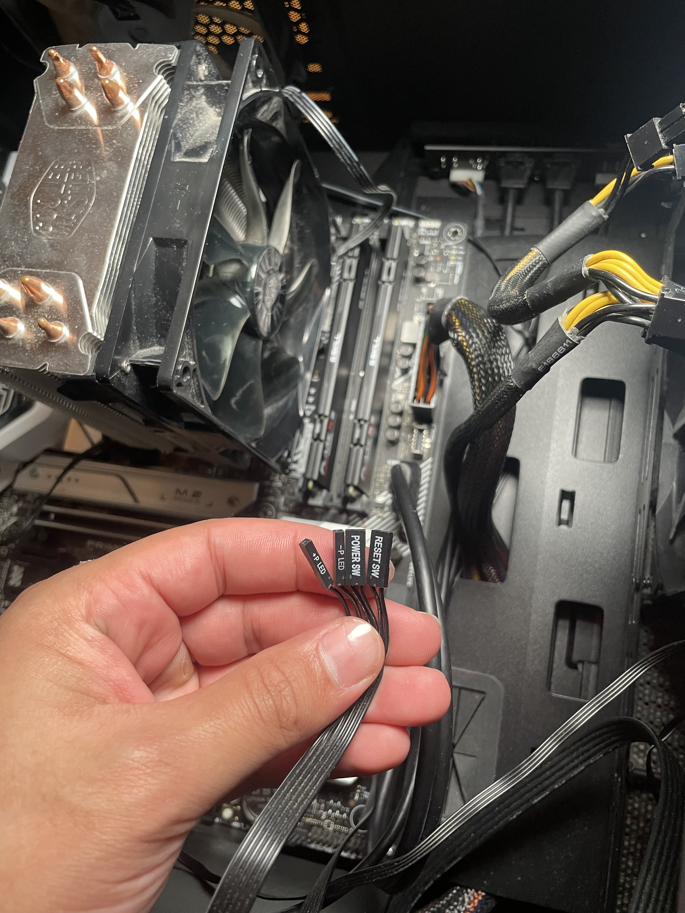
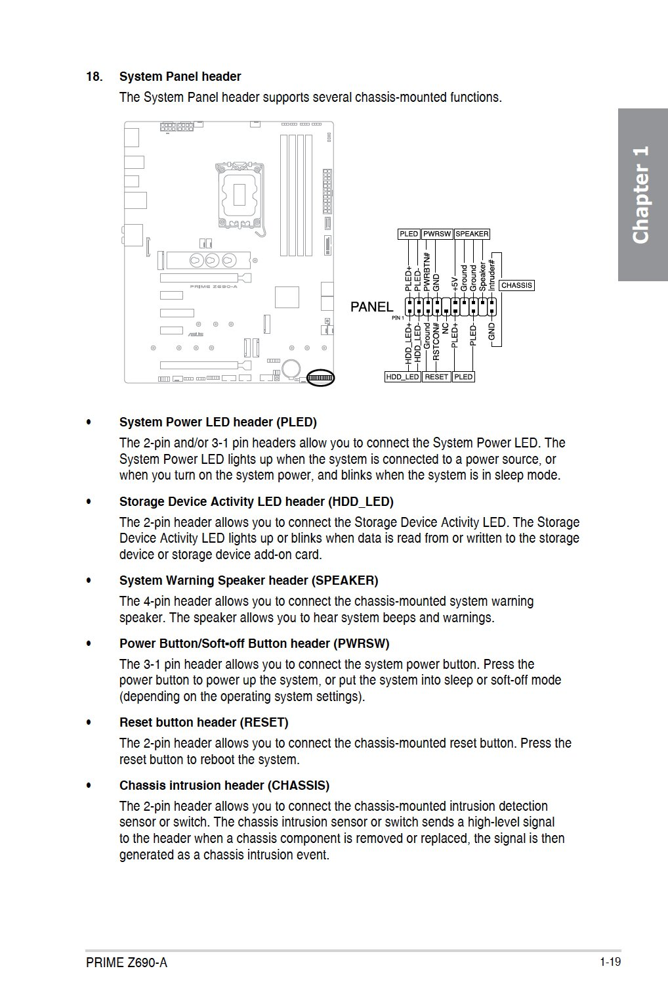
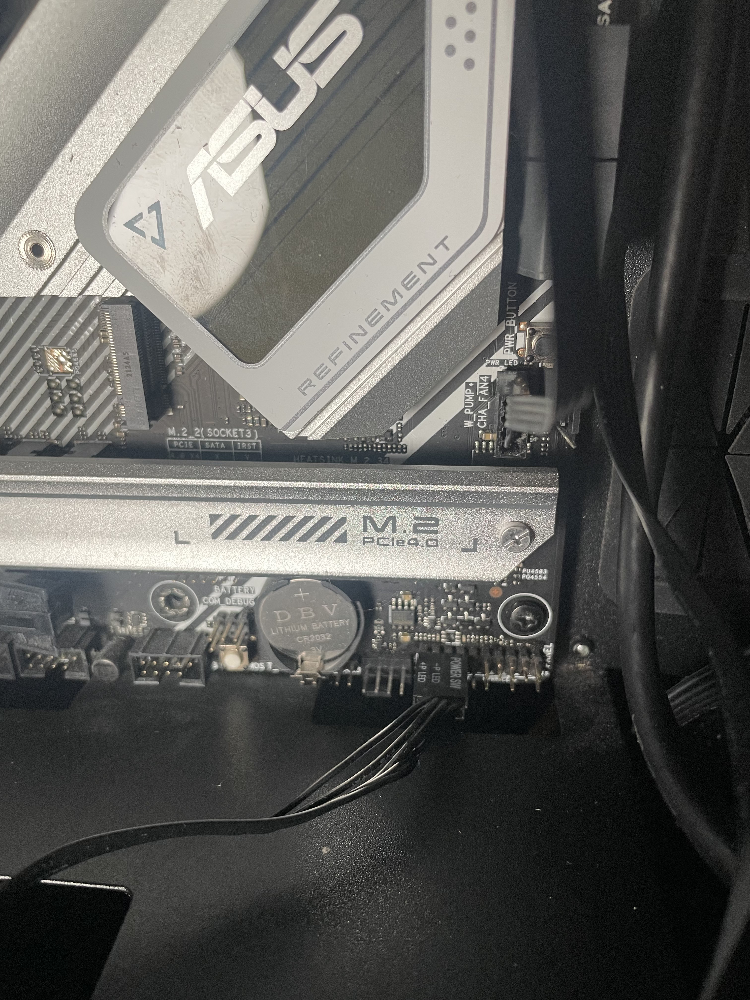

Step 6: Connect Cables
Materials Needed
- Power Supply Cables
- Motherboard Manual (for cable placement reference)
Instructions
- Locate Cable Ports on the Motherboard
- Identify CPU Fan Connector
- Locate Chassis Fan Connector
- Prepare Front Panel Cables
- Consult Manual for F_PANEL Configuration
- Connect Front Panel Cables
At this stage, you'll see a range of cables that need to be connected to the motherboard. Organize them for easy access.
Locate the “CPU_FAN” port on the motherboard for the CPU cooler fan. This connector is typically labeled.
Identify the “CHA_FAN” or “SYS_FAN” connector on the motherboard for connecting any additional case fans.
Gather the front panel connectors for items like power and reset switches, which will connect at the bottom of the motherboard.
Use your motherboard's manual to correctly place the front panel connectors. This ensures your power button, LEDs, and reset switch will function.
Align each front panel cable with the correct pins on the motherboard, referring to the manual for guidance.
Video Guides
- PSU Power Cable and USB 3.2 Gen 1 Connection: Watch Video
- Fan Connection Example: Watch Video